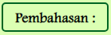
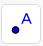
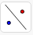

1. Tekan button pembahasan () untuk melihat penjelasan jawaban pada contoh soal
2. Isilah jawaban pada titik-titik dengan benar
3. Jika jawaban benar, kotak berwarna hijau
4. Jika jawaban salah, kotak berwarna merah
 Dilatasi dengan Pusat \[O(0,0)\]
Dilatasi dengan Pusat \[O(0,0)\]

Pembahasan :
\[A(-3,2)\xrightarrow{D[0,2]}\]\[{A}'(\]\[(\]\[),\]\[(\]\[))={A}'(\]\[)\]Menggambar Dilatasi dengan pusat \[O(0,0)\]
Jika telah mengisi jawaban dengan benar, cobalah gambar translasi pada bidang kartesius di bawah ini.
Langkah-langkahnya sebagai berikut:
1. Membuat titik
a. Misal membuat titik A (1,1) dengan mengklik menu 
b. Arahkan kursor ke bidang kartersius pada titik (1,1)
c. Kemudian klik pada titik yang telah dipilih
d. Lakukan hal yang sama untuk titik yang lainnya.
2. Membuat titik pusat
a. Misal membuat titik pusat O(0,0) dengan mengklik menu
b. Arahkan kursor ke bidang kartersius pada titik (0,0)
c. Kemudian klik pada titik yang telah dipilih
3. Membuat hasil bayangan dari dilatasi
a. Klik menu 
b. Pilih
c. Klik titik A
d. Kemudian klik titik pusat dilatasi
e. Lalu masukkan faktor dilatasi
4. Lakukan hal yang sama untuk titik yang lainnya